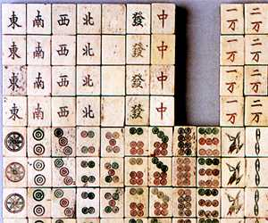

日本へ初めて麻雀を招来したとされる人物。
明治７年6月１日、新潟県上越市に生まれた。明治34年、東京帝国大学英文科卒。在学中、ラフカディオ・ハーン(小泉八雲)、夏目漱石の教えを受ける。鳥取県立第一中学、大阪府立八尾中学で教鞭をとった。
明治38年９月、英語教師として中国に渡り、四川省資洲師範学堂で教鞭をとった。この中で麻雀を覚えた。
明治42年、日本上陸第１号とされる麻雀牌を携えて帰国。樺太（からふと）の大泊（おおどまり）中学に教頭として赴任。中国から持ち帰った麻雀牌で同僚や生徒にも麻雀を教示し、楽しんだという。
明治時代、中国に渡った人物は数多い。そこで名川彦作より以前に彼の地で麻雀を覚え、麻雀牌を日本に持ち帰った人物が他にいた可能性はある。しかし史実的にまったく不明。
名川氏の事績は諸先人の文献※でも紹介されており、史実的に明確である最初の人物。そこで麻雀史上、最初の麻雀招来者とされている。
※藤井尚治「麻雀の遊び方（至文堂T14.4.30）」。手塚晴夫「南は北か」平成元年11月３日刊、私家本。
昭和25年４月、逝去。享年78歳
なお名川氏が中国より持ち帰ったとされる牌は、遺族から麻雀博物館に寄贈された。現在、同博物館に展示されている。
名川彦作牌（麻雀博物館蔵）

日本への最初の麻雀招来については、「明治16年、中山保洲という人物が南京から水牛骨牌を持ち帰った」という資料が存在するという（「麻雀雑学(鈴木ひろし)」麻雀新聞・昭61・1/10」)。またその資料には、「中山が持ち帰った牌は大正８年に菊池寛に贈与された」との記述があるという。
しかし菊池寛自身は「麻雀を始めたのは昭和元年の半ば頃（週刊朝日・昭２・1/9号）」と述懐している。もとより所蔵＝プレーの開始とは限らないが、それでもそこには６年のギャップがある。したがって現時点では今一つ検討を要する。
|